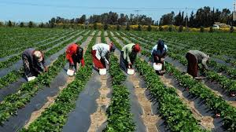
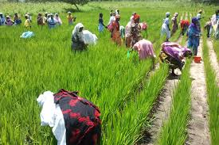

The agricultural sector occupies the largest percentage of the population, employing 60 percent of the Senegalese labor force. The sector includes farming, livestock husbandry, fishing, and forestry. It accounts for about 19 percent of the country's GDP. The most important agricultural activity in Senegal is peanut production. Other important primary products produced for the domestic market include millet, corn, sorghum, rice, cotton, tomatoes, green vegetables, cattle, poultry, pigs, and fish. Besides peanuts, primary exports include fish and cotton. With agricultural production playing such a dominant role in the Senegalese economy, the country is susceptible to destructive natural forces such as declining rainfall and desertification . Countries that rely heavily on agriculture are similarly vulnerable, but the problems are particularly severe in Senegal, a semi-arid country in which rainfall can vary considerably from year to year. Moreover, only 12 percent of all land is arable (capable of supporting agriculture). The prices of agricultural commodities in the international market are similarly dependent upon natural forces. If there were to be heavy rainfall in all peanut-producing countries, the international supply of peanuts would be high, leading to a decrease in the international price for peanuts because of the abundant supply. Since it is impossible to predict the situation in any given year, fluctuating prices are a constant threat and source of insecurity for agricultural nations like Senegal.
 The fishing sector has replaced the groundnut sector as Senegal's export leader. Its export earnings reached U.S.$239 million in 2000. The industrial fishing operations struggle with high costs, and Senegalese tuna is rapidly losing the French market to more efficient Asian competitors. Phosphate production, the second major foreign exchange earner, has been steady at about U.S.$95 million. Exports of peanut products reached U.S.$79 million in 2000 and represented 11% of total export earnings. Receipts from tourism, the fourth major foreign exchange earner, have picked up since the January 1994 devaluation. In 2000, some 500,000 tourists visited Senegal, earning the country $120 million. Senegal’s new Agency for the Promotion of Investment (APIX) plays a pivotal role in the government’s foreign investment program. Its objective is to increase the investment rate from its current level of 20.6% to 30%. Currently, there are no restrictions on the transfer or repatriation of capital and income earned, or investment financed with convertible foreign exchange. Direct U.S. investment in Senegal remains about U.S.$38 million, mainly in petroleum marketing, pharmaceuticals manufacturing, chemicals, and banking. Economic assistance, about U.S.$350 million a year, comes largely from France, the IMF, the World Bank, and the United States. Canada, Italy, Japan, and Germany also provide assistance. Senegal has well-developed though costly port facilities, a major international airport serving 23 international airlines, and direct and expanding telecommunications links with major world centers.